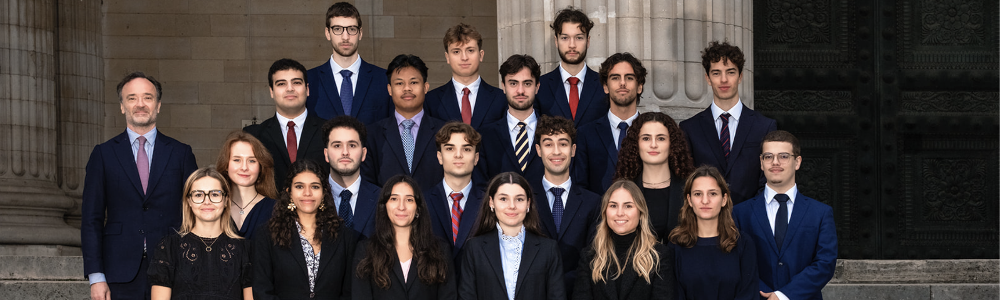

Le Magistère · Université Paris-Panthéon-Assas
Créé en 1985 et successivement dirigé par Paul Didier et Michel Germain, puis codirigé par Dominique Bureau et Louis d'Avout, auxquels Antoine Gaudemet a succédé, le Magistère Juriste d'Affaires de l'Université Paris-Panthéon-Assas, formation sélective de droit des affaires en trois ans, a rapidement acquis une réputation de tout premier plan.
Recrutant ses étudiants après les deux premières années de licence et au terme d'une procédure d'admission particulièrement rigoureuse, il permet l'obtention du Master 2 Professionnel Juriste d'affaires, du Diplôme de Juriste Conseil d'Entreprise (DJCE) et d'un certificat de spécialisation à l'issue de la dernière année.
Sa notoriété résulte de différents facteurs : la qualité et le nombre très restreint des étudiants, liés par une formation commune d'une durée propice au développement d'un esprit de promotion ainsi que d'un solide réseau inter-générationnel.
La qualité de la formation dispensée assure l'acquisition et l'approfondissement des savoirs essentiels à un juriste de droit des affaires : droit des sociétés et des marchés financiers, droit fiscal, comptabilité, droit des contrats, droit du travail, droit de la concurrence, droit international des affaires — à quoi s'ajoutent des enseignements hebdomadaires en droits anglais et américain, dispensés en langue anglaise.
La renommée internationale du Magistère offre de surcroît à ses étudiants une voie d'accès privilégiée aux universités étrangères les plus prestigieuses, dans lesquelles ils sont régulièrement admis pour suivre un LLM à l'issue de leur formation en France — Harvard, NYU, Oxford, Cambridge.
En quelques mots
Direction
« Formation exigeante, le Magistère est ainsi parvenu à conjuguer au sein de l'Université un diplôme d'excellence et un esprit de cohésion qui contribuent, pour ceux qui rejoignent ses rangs, à rendre l'aventure passionnante. »
Antoine Gaudemet
Professeur à l'Université Paris-Panthéon-Assas
Directeur du Magistère
LLM après le Magistère
Destinations régulièrement rejointes par les diplômés
En 1985, le Professeur Paul Didier créa le Magistère au sein de l'Institut de Droit des Affaires de l'Université Paris-Panthéon-Assas. Le Magistère est une formation en trois ans qui chevauche les deuxième et troisième cycles. Il prépare des étudiants recrutés sur concours à l'issue de la deuxième année de Licence, aux carrières d'avocat d'affaires, de juriste conseil d'entreprises, de banques ou d'établissements financiers.
Depuis 1992, le Magistère est couplé en troisième année avec le Diplôme de Juriste Conseil d'Entreprise (DJCE). Cette formation spécifique allie des enseignements théoriques fondamentaux à une approche pratique particulièrement orientée vers le droit des affaires, la fiscalité, les techniques financières et une connaissance approfondie des droits anglais et américain.
À la suite de la réforme L.M.D., le Magistère est devenu en 2005 le Master 2 professionnel Magistère Juriste d'Affaires – DJCE.
Néanmoins, le Magistère ne veut pas se laisser réduire à n'être qu'une formation de haut niveau. Il doit aussi être une institution dans laquelle le sens de l'initiative et de l'organisation, le dynamisme, le goût des responsabilités de chaque étudiant, doivent pouvoir s'épanouir et conduire à des réalisations faisant vivre et connaître le Magistère.
Repère
Quarante ans d'histoire et une notoriété de premier plan dans le paysage juridique français et international.
À l'issue de leurs années d'études au Magistère, les étudiants sont titulaires des diplômes suivants :
Diplôme d'Université
L'ensemble des trois années conduit à la délivrance du diplôme du Magistère Juriste d'Affaires, un diplôme d'Université bénéficiant de plein droit du statut de diplôme national.
Certification complémentaire
Le DJCE est accompagné d'un Certificat de spécialité délivré par la Fédération Nationale du Droit de l'Entreprise.
Cabinets & partenaires